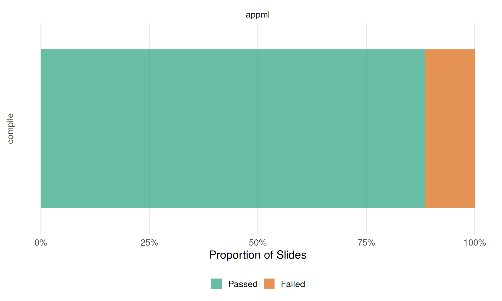

This document tabulates the state of the slides in
lecture_*/slides/<topic>/ based on
- compilation checks (does it compile,and if not, is there a salient
error message?) and
- (optionally and rarely) comparison with presumably “known good”
versions of the slides located in
lecture_*/slides-pdf/
Latest Commits
Displaying the latest commits of the lecture service repository and
each of the currently included lectures (for debugging and race
condition mitigation (kind of)).
Status of the lecture_service repo (time in UTC)
|
Branch
|
Last Commit
|
By
|
Message
|
|
main
|
2025-09-24 00:17:16
|
Lukas Burk
|
Add recursive slide compilatione make target
|
Latest commits per lecture (times in UTC)
|
Lecture
|
Branch
|
Last Commit
|
By
|
Message
|
|
lecture_appml
|
main
|
2025-10-09 13:07:08
|
Giuseppe Casalicchio
|
logo
|
If you’re missing a lecture here after rendering this site
interactively, you might have to add them to the
included_lectures files or ensure they are downloaded
correctly.
Slide status

Click to expand explanation of table columns
lecture_advml/slides/gaussian-processes/slides-gp-bayes-lm.tex
\___________/ \________________/ \________________/
lecture topic <slide-name>
lecture_advml/slides-pdf/slides-gp-bayes-lm.pdf
\___________________/
pdf_static / "Reference PDF"
Tables are organized by lecture (first level) and lecture topics
corresponding to folders in slides/<topic> (second
level), with a table per topic. Topics ignore certain folders like
attic and all.
- Slide: The
<slide-name> with a
link to the compiled .tex file (if it compiles).
- Compiles?: Whether the .tex file compiles without
error using
latexmk -pdf. This can depend on the
availability of specific LaTeX dependencies, but assuming they are not
the issue, this usually indicates syntax issues or things like
\includegraphics calls using relative paths that work on
Overleaf but not locally.
- Comparison: Checking the compiled
<slide-name>.tex against
slides-pdf/<slide-name>.pdf using
diff-pdf-visually:
- ❌: The check failed surely, either due to differing page counts or
because there is no reference PDF.
- ❓: The check indicates differences on at least one slide, but they
may be minor and need manual checking.
- ✅: The check seems to be fine, the PDF files match.
- Note: A comment on the previous column listing the
specific reason for a failing check. Also enumerates the slide pages
where differences are found, and links to a PDF containing a diff of the
two files generated with
diff-pdf (at a lower resolution
than the originals).
lecture_appml
12 topics with a total of 35 slides
06_adv-feature-preproc-selection
10_ensembles-stacking
|
Slide
|
Compiles?
|
Note
|
|
slides01-ensembles-averaging
|
❌
|
1382: ! Undefined control sequence. 1382: sbl 1382:
l.164 item $sbl
|
|
slides02-ensembles-stacking
|
❌
|
1369: ! Undefined control sequence. 1369: l.142 … dataset, where
$xv^{prime(i)} = (blxi 1369: [1], ldots, blxi[M])$
|